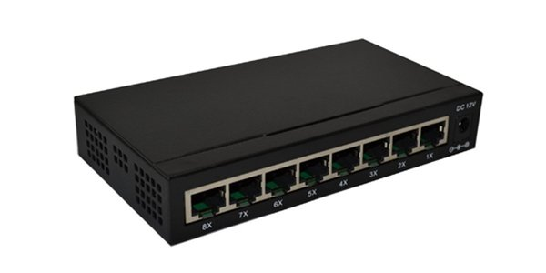

Rabu 29 Desember 2021
PENGERTIAN SWITCH
Switch adalah suatu jenis komponen jaringan komputer yang digunakan untuk menghubungkan beberapa HUB dalam membentuk jaringan komputer yang lebih besar atau menghubungkan komputer-komputer yang memiliki kebutuhan akan bandwidth yang cukup besar.
Beberapa fungsi switch yaitu sebagai manajemen lalu lintas yang terdapat pada suatu jaringan komputer, switch bertugas bagaimana cara mengirimkan paket data untuk sampai ke tujuan dengan perangkat yang tepat, Switch juga bertugas untuk mencari jalur yang paling baik dan optimal serta memastikan pengiriman paket data yang efisien ketujuannya.
CARA KERJA SWITCH
Switch merupakan hardware (perangkat keras) jaringan komputer yang sama dengan HUB, perbedaanya switch ini lebih pintar walaupun harganya sedikit lebih mahalan ketibang HUB. Cara kerja switch yaitu dengan cara menerima paket
data pada suatu port lalu akan melihat MAC (Media Access Control) tujuannya dan membangun sebuah koneksi logika dengan port yang sudah terhubung dengan node atau perangkat tujuan.
Sehingga selain port yang dituju tidak dapat menerima paket data yang dikirimkan dan akan mengurangi terjadinya tabrakan data atau disebut dengan collision. perangkat yang terhubung ke port tertentu, MAC addsernya akan dicatat
di MAC address table yang nantinya disimpan pada memori chache switch, itulah bagaimana switch bekerja.
Jenis-jenis Switch
Secara umum Switch terbagi menjadi dua jenis yakni menurut OSI (Open System Interconnection) yang mana ada dua switch layer dua dan layer tiga. Switch layer 2 adalah switch yang operasi data link layer terdapat pada lapisan model OSI.
Switch dapat meneruskan paket dengan melihat alamat MAC tujuan, switch juga dapat menjalankan fungsi bridge antar segmen-segmen LAN (Local Area Network) sebab switch mengirimkan paket-paket data dengan cara melihat alamat yang akan ditujukan tanpa mengetahui protokol jaringan yang digunakan.
Switch layer 3 adalah switch yang terletak di network layer yang berada di lapisan model OSI. Dimana switch dapat meneruskan paket data memakai IP Addres. Switch layer 3 (tiga) biasa disebut dengan switch routing maupun switch multilayer.